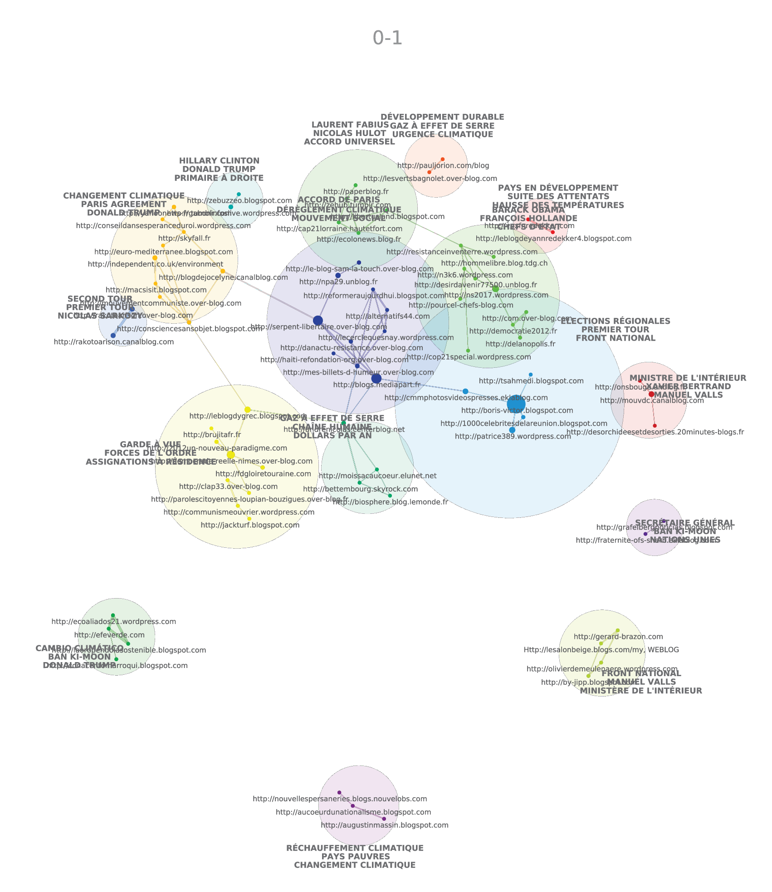
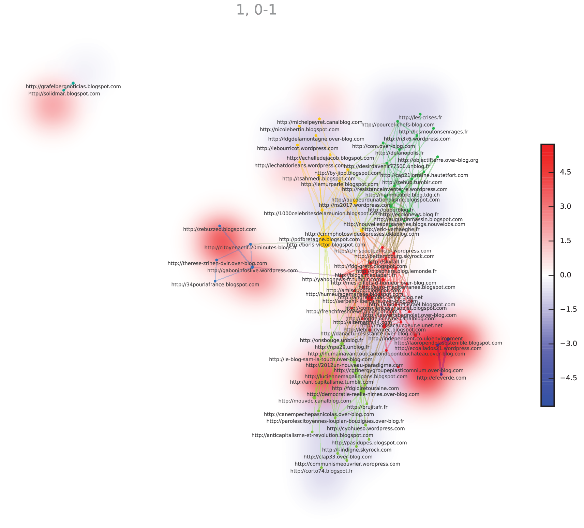

Réseau des acteurs
Afin de poursuivre l’analyse sur le réseau sémantique des deux COP et de comprendre les thématiques éventuellement liées à certains blogs, nous souhaitions au départ créer une cartographie sur Hyphe, l’outil de crawling et d’indexation du web du Medialab. Il avait été question de créer une cartographie des acteurs en fonction des url, ce qui aurait créé un réseau des blogs (citant et cités) ayant traité de la COP21. Outre les soucis techniques du serveur de Hyphe, une question méthodologique nous a amené à écarter cet outil.
En effet, Hyphe propose crawler les toutes les url présentes sur un site web, il est ainsi possible de déceler quel site mentionne tel autre. Cependant, l’idée d’une cartographie à partir des url s’est heurtée à plusieurs contraintes, à la fois techniques et méthodologiques.
Tout d’abord, pour la partie technique, Hyphe fonctionne à partir d’url, que l’on importe. Hyphe vérifie ensuite la validité du lien pour le crawlé. Or, en faisant des essais de faisabilité, nous avons constaté de nombreuses pages non-valides sur Hyphe, mais qui étaient toujours actives. En se penchant sur les url, nous avons remarqué des erreurs dans les adresses. Par exemple, le blogs français étant hébergés sur Blogspot étaient toutes indexées en .com au lieu de .fr, et tout était indexé en “http” alors que certains étaient en “https”. Cette indexation de Radarly pose problème pour Hyphe, parce que ces url mal indexées sont considérées comme fausses. Sur environ soixante-dix blogs, environ la moitié a dû être retouchée corrigée pour que Hyphe détecte une page valide.
Pour la partie méthodologique, nous avions deux choix : créer un réseau à partir des hyperliens des blogs, et créer un réseau à partir des hyperliens des articles de blogs indexés par Radarly. Créer un réseau à partir des blogs en eux-mêmes impliquait une perte de données a priori, car Hyphe aurait crawlé tout le site web et il n’aurait pas été possible de comprendre si les citations provenaient de la COP ou d’autre chose. Pourtant, et nous l’avons réalisé trop tard, un réseau des citations aurait permis de classer les blogs par communautés d’intérêts, et de placer les blogs dans des courants politiques ou écologiques. La deuxième méthode était de crawler par page. Le risque était ici d’avoir un réseau avec très peu de liens, car un noeud représenterait ici un article, et réunir tous les articles sous un même blog aurait été long et compliqué à mettre en place. De plus, certains liens étaient en double, en triple voire en quadruple à cause de l’indexation de Radarly, ce qui aurait impliqué d’aller visiter chaque page pour vérifier s’il y avait d’éventuels doublons.
Un essai de cartographie des blogs
Réseau d'acteurs

Un réseau d’acteurs spécifiques à chaque COP
Nous avons fait un essai sur 69 blogs (les plus importants en nombre de publication), en entrant les hyperliens des blogs et non des articles de blogs. Cela représente ainsi l’autorité d’un site, plus le noeud est important, plus il est cité par d’autres blogs. Nous avons vite abandonné cette cartographie en grande partie à cause des problèmes de serveurs, mais cette tentative n’est pas inintéressante. En effet, nous voyons que Mediapart attire les liens, sa position de presse en ligne lui confère une position importante. On peut distinguer un petit cluster autour de la voiture propre en bas à gauche du réseau, et le cluster central (en vert) semble regrouper des sites militants. Peut-être qu’avec deux-cents ou trois-cents blogs, le réseau aurait été plus exploitable. La principale critique est cependant qu’il n’est pas possible de déterminer si les liens entre ces blogs proviennent de la COP ou s’ils partagent des thématiques communes, ce qui est tout de même une information importante pour les catégoriser.
Afin de caractériser les blogs, nous avons cherché à identifier des champs lexicaux associés à certains blogs. Pour cela, Cortext Manager a été utilisé afin d’associer aux blogs des termes extraits à partir des articles.
Tout d’abord, nous pouvons constater qu’il y a quelques clusters citant des mots en Espagnol ou en Anglais, cela provient du fait que lors de l’extraction de COP22, un oubli a été fait pour le tri de langue, mais avec des acteurs Français le bruit a eu une influence mineure, et les listes de termes ont été nettoyées.
Le graphe met en évidence des clusters de blogs traitant de questions climatiques voire écologiques, et d’autres de questions plus centrées sur la politique.
Les clusters au centre du graphe central, coloriés en bleu foncé, en vert et en bleu plus clair, représente des blogs centrés sur le climat et les COP. Les termes associés semblent militants, avec du haut vers le bas l’accord universel, le mouvement social ou la chaîne humaine, associés à l’écologie (Nicolas Hulot, Dérèglement climatique et Gaz à effet de serre). Les blogs importants sont les noeuds les plus gros, comme serpent-libertaire ou Médiapart. Ces blogs semblent plutôt militants écologiques ou à gauche, voire à l’extrême-gauche: il y a ainsi toujours de haut en bas ecolonews ou biosphère pour l’écologie, le blog de serpent libertaire (assez central), le blog de sam la touch, celui de npa29 ou de danactu-resistance qui semblent être des militants d’extrême gauche (avec des thèmes comme l’anti-impérialisme, l’anti-capitalisme, l’anarchisme…), ou des blogs militants citoyens comme moissacaucoeur.
Plusieurs clusters politiques ressortent à gauche et à droite ils sont créés en fonction des termes utilisés en lien avec la politique. La politique, et donc les deux COP puisque les extractions ont été faites en premier lieu parce que les articles de blogs ont été indexés parce qu’ils parlent des COP, est divisée en deux famille, les événement politiques nationaux et internationaux (élections, la vie politique, accords politiques) et les événements en marge de la COP, comme le cluster “pays en développement, suite des attentats, hausse des températures” au en haut à droite, et celui en-bas à gauche “garde à vue, forces de l’ordre, assignations à résidence”.
Cette catégorisation des blogs, certes exploratoire, permet tout de même de “ranger” les blogs dans des grandes thématiques, avec ceux qui ont plus parlé de l’écologie, de politique ou des COP en elles-mêmes. Il est tout de même intéressant de voir que des thèmes comme l’Afrique, l’énergie ou encore les accords en eux-mêmes sont absents ou marginaux. Cela laisse penser que lorsqu’il y a des mentions d’hommes ou femmes politiques, de partis ou de mouvements politiques, l’accent des blogs est centré sur des questions sociales et climatiques, mais aussi sur l’actualité. Une hypothèse qui mériterait d’être creusée, avec plus de temps, serait que ce sont surtout des blogs militants et d’actualité qui ont réagi à la COP. La COP est ainsi associée à d’autres enjeux en lien avec les thématiques des blogs.
Une réseau a été créé, toujours avec Cortext manager, pour situer les blogs en fonction de leur proximité sémantique et par COP. Une carte de chaleur met en évidence l’appartenance à la COP21 en bleu et à la COP22 en rouge.
Avec ce réseau, il est possible d’identifier des blogs spécifiques à chaque COP. Les langues différentes ressortent toujours, puisque Cortext ne “traduit” pas les langues, elles forment donc des clusters très significatifs. En haut à gauche, et à droite, deux clusters sont significativement associés à la COP22, du fait des langues étrangères présentes dans le corpus COP22 et pas dans celui de la COP21. La majorité du cluster, en bleu, est associé à la COP21. Quelques blogs (hormis les clusters de langues) sont spécifiques à la COP22 comme “anticapitaliste.tumblr”. Le cluster central, sur les accords de Paris, n’est pas associé à une COP en particulier. Cela indique donc que la thématique des accords sur le climat n’a pas été suivie par certains blogs en particulier, mais qu’il y a eu une continuité des blogs entre les deux COP.
Ces visualisations permettent ainsi de catégoriser les blogs